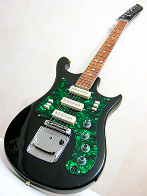
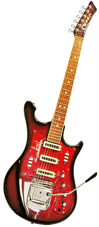

Электрогитара «Урал» — наиболее популярная модель среди аналогичных советских изделий. Изготовлена она в Свердловске, представляет собой инструмент начальной категории, который проигрывает по многим параметрам профессиональным зарубежным аналогам. Основной ориентир — обеспечение аккордного аккомпанемента. Стоит отметить, что гитара отличается прочностью.
| Внешний вид | |
| Эргономика корпуса: | вырезы под правую руку и тело |
| Инкрустации: | белвые точки |
| Цвета: | черно-красный |
| черно-желтый | |
| черно-зеленый | |
| Размеры | |
| Мензура: | 650 мм |
| Тольщина деки: | 42 мм |
| Ширина грифа у порожка: | 42 мм |
| Ширина грифа у 12 лада: | 52 мм |
| Толщина грифа: | 22 мм |
| Фурнитура | |
| Колки: | 6 в ряд |
| Количество струн: | 6 |
| Количество звукоснимателей: | 3 |
| Количество ладов: | 21 |
| Анкерный стержень: | регулируемый |
| Материалы | |
| Дека: | фанерированная доска лиственных пород |
| Гриф: | бук |
| Накладка грифа: | дуб/бук/береза |
Корпусная часть Электрогитара «Урал» оснащена корпусом из буковой балки шириной до 120 миллиметров по центру деки. Выпускались вариации как с клееным элементом, так и в целостном исполнении. По бокам присутствуют детали из хвойных пород. Верхняя и нижняя часть деки покрыта многослойной фанерой, верхний выступ гораздо больше нижнего (общая форма напоминает марку Strat). Пространство под пластиковой панелью с электронным оборудованием заполнено не более чем наполовину.

Гриф выполнен из бука, хотя чаще всего используется клен. Накладка имеет окантовку из белых пластиковых полос по краям. Как свидетельствуют отзывы владельцев, гриф со временем зачастую деформируется под натяжкой струн. Анкер в исправлении этой проблемы помогает мало. В итоге требуется значительное усилие для воспроизведения музыки в диапазоне свыше первых девяти ладов.
Рассматриваемый инструмент оснащен одиночными закрытыми колками, которые крепятся к грифу при помощи специальных крышек. Элементы выполнены из цинкового сплава, имеют неплохие литейные свойства. К минусам этого материала относится хрупкость и невозможность припайки. При активной эксплуатации колки достаточно быстро изнашиваются, что отражается при настройке струн сбросом практически на один тон. Устройство электрогитары «Урал» включает в себя электронику, состоящую из следующих элементов: Три сингла. Тембрблок. Стандартные звукосниматели (деталь со стальным основанием с магнитом). В верхней части имеется сердечник с шестью винтами. Весь механизм прикрыт декоративной крышкой из пластика. Выход «звучков» составляет порядка 70 мВ. Возникает резонный вопрос: «Как экранировать звукосниматель на электрогитаре „Урал“?» Специалисты решают эту проблему путем установки обновленной электроники корейского или китайского производства. Однако актуальность такой манипуляции сейчас весьма сомнительна, поскольку на рынке без проблем можно найти проработанные и доступные по цене аналоги.

Электрогитара «Урал 650 Арт-422». Выпуск данной модификации датирован 1977 годом и приурочен к 60-летию Октябрьской революции. Инструмент выполнен в строго регламентированном внешнем оформлении, корпус сделан из красно-черного дерева, над звукоснимателями присутствует изображение легендарного крейсера «Аврора».